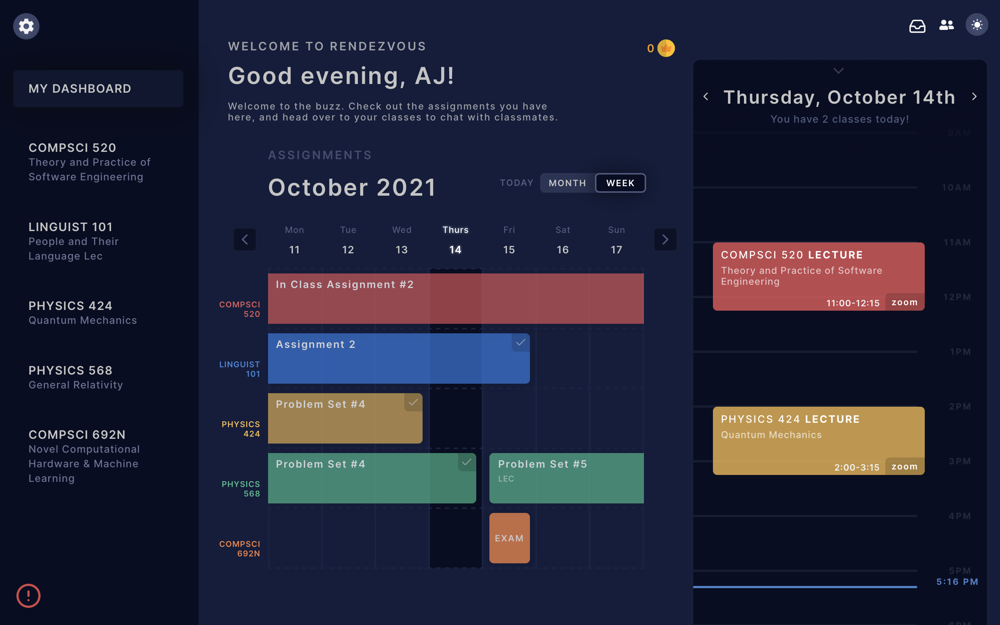
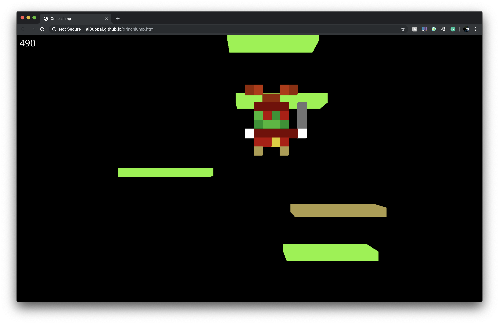

Hi, I'm A.J. Uppal. I am a maker at heart, and I have a penchant for creating everything from air pollution monitors to 3D games. I love music and running, and on a nice summer day, you can find me in the garden, growing heirloom tomatoes! I am currently studying Computer Science (B.S.) and Astrophysics (B.S.) at the University of Massachusetts, Amherst. I love to code, but my passion for cosmology extends further back. Ever since I turned four, I have had a dream of becoming an astronaut, venturing into the deep reaches of space. And while that may not be the most feasible career option, studying the (computational!) physics and math of the Universe captivates me like nothing else.
Working across integrations teams, controlling how data flows in and out of our system. Streamlined EHR integration processes, enhancing system efficiency and reliability. Architected and deployed scalable software solutions to manage data flow between Notable's platform and EHRs, and designed and implemented robust software systems leveraging a modern tech stack including React and Kubernetes. Tech stack: Python, TypeScript, Node.js, React, PostgreSQL, BigQuery, GCP, Kubernetes, Terraform.
Spearheading the architecture and engineering of the Harvest solution.
Responsible for upgrading the implementation for a subdepartment of the Physics program. Using React.js on the front-end, Flask on the back-end, and PostgreSQL for the database. Deployment on AWS EC2.
Designed and spearheaded the development of the full stack implementation for a revolutionary education and workforce initiative. MERN stack (MongoDB, Express.js, React.js, Node.js), AWS for hosting. Took the application from nascency to deployment.
Engineered for the ExcelChat chrome extension (javascript, React.js, Redux.js), built javascript modules (AutoTyper, testimonial carousel), built a “bot” to maintain problem volume on the Got It Study platform (python, Flask, React.js, Network APIs), built a mobile app for converting Natural Language to SQL (microservices, React.js), schema scraping from GitHub/SQLFiddle (python).
Engineered for the ExcelChat chrome extension (javascript, React.js, Redux.js), built javascript modules (AutoTyper, testimonial carousel), built a “bot” to maintain problem volume on the Got It Study platform (python, Flask, React.js, Network APIs), built a mobile app for converting Natural Language to SQL (microservices, React.js), schema scraping from GitHub/SQLFiddle (python).
Led the marketing campaign for a YouWeb Inc (Discord, Got-it) project, and built the campaign website and web application (javascript, node.js, Adobe Photoshop, Adobe Illustrator)
Built, tested, and calibrated low cost air pollution monitors (C) at the Bay Area Air Quality Management District. Built the cloud networking interface to view the data globally (python, javascript, node.js). Secured a $3000 grant for Los Altos High School to integrate air pollution monitor building into APES curriculum.

Student-centralized nexus built for UMass personnel to connect and stay on top of life. Built on Flask/React/Postgres deployed to Google Cloud.

Designed a 3D version of doodle jump using Three.js. The character is an 8-bit style “grinch”.
Website